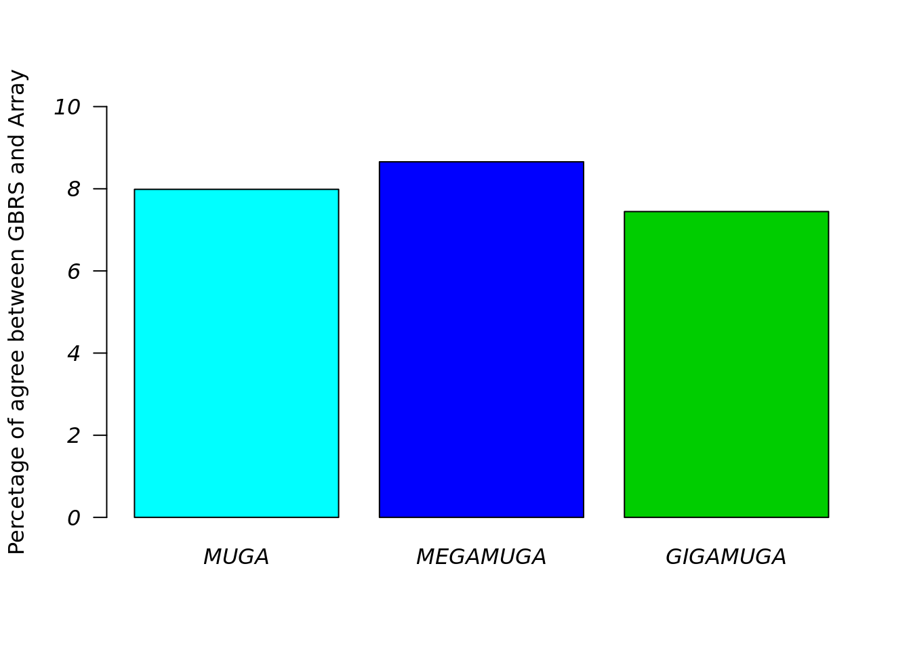

Figure2
Hao He
2019-12-02
Last updated: 2019-12-02
Checks: 6 1
Knit directory: Workflowr_GBRS_array/
This reproducible R Markdown analysis was created with workflowr (version 1.5.0). The Checks tab describes the reproducibility checks that were applied when the results were created. The Past versions tab lists the development history.
Great! Since the R Markdown file has been committed to the Git repository, you know the exact version of the code that produced these results.
Great job! The global environment was empty. Objects defined in the global environment can affect the analysis in your R Markdown file in unknown ways. For reproduciblity it’s best to always run the code in an empty environment.
The command set.seed(20181011) was run prior to running the code in the R Markdown file. Setting a seed ensures that any results that rely on randomness, e.g. subsampling or permutations, are reproducible.
Great job! Recording the operating system, R version, and package versions is critical for reproducibility.
Nice! There were no cached chunks for this analysis, so you can be confident that you successfully produced the results during this run.
Using absolute paths to the files within your workflowr project makes it difficult for you and others to run your code on a different machine. Change the absolute path(s) below to the suggested relative path(s) to make your code more reproducible.
| absolute | relative |
|---|---|
| /home/heh/GBRS/Workflowr_GBRS_array/ | . |
Great! You are using Git for version control. Tracking code development and connecting the code version to the results is critical for reproducibility. The version displayed above was the version of the Git repository at the time these results were generated.
Note that you need to be careful to ensure that all relevant files for the analysis have been committed to Git prior to generating the results (you can use wflow_publish or wflow_git_commit). workflowr only checks the R Markdown file, but you know if there are other scripts or data files that it depends on. Below is the status of the Git repository when the results were generated:
Ignored files:
Ignored: .Rhistory
Ignored: .Rproj.user/
Untracked files:
Untracked: analysis/Figure1_by_vit.R
Untracked: analysis/Figure3.0.Rmd
Untracked: analysis/Figure3.pdf
Untracked: analysis/Figure3_0.Rmd
Untracked: analysis/Figure3_LOD8.Rmd
Untracked: analysis/Figure3_ciseqtl_2.Rmd
Untracked: analysis/Figure3_transeqtl_FDR0.01.R
Untracked: analysis/Figure3_transeqtl_FDR0.01.sh
Untracked: analysis/Figure3_transeqtl_FDR0.05.R
Untracked: analysis/Figure3_transeqtl_FDR0.05.sh
Untracked: analysis/Figure3_transeqtl_lod8.R
Untracked: analysis/Figure3_transeqtl_lod8.sh
Untracked: analysis/old_analysis/
Untracked: analysis/publish_workflowr.R
Untracked: analysis/sina_plot.rmd
Untracked: code/R_rainclouds.R
Untracked: code/summarySE.R
Untracked: data/Agree_table_three_array.RData
Untracked: data/DO_Liver_sample_sheet.tsv
Untracked: data/DO_Striatum_recomb.GBRS.genotypes.RData
Untracked: data/DO_Striatum_sample_sheet.tsv
Untracked: data/DO_liver_recomb.GBRS.genotypes.RData
Untracked: data/fixed.gigamuga358_cis.eqtl.RData
Untracked: data/fixed.megamuga184_cis.eqtl.RData
Untracked: data/fixed.muga275_cis.eqtl.RData
Untracked: data/gbrs184_cis.eqtl.RData
Untracked: data/gbrs275_cis.eqtl.RData
Untracked: data/gbrs358_cis.eqtl.RData
Untracked: data/gene.anno.cis.RData
Untracked: data/gigamuga358.recomb.RData
Untracked: data/gigamuga358_cis.eqtl.RData
Untracked: data/megamuga184.recomb.RData
Untracked: data/megamuga184_cis.eqtl.RData
Untracked: data/mismatch_autochr_gigamuga358GBRS.RData
Untracked: data/mismatch_autochr_megamuga184GBRS.RData
Untracked: data/mismatch_autochr_muga275GBRS.RData
Untracked: data/mismatch_gigamuga358GBRS.RData
Untracked: data/mismatch_megamuga184GBRS.RData
Untracked: data/mismatch_muga275GBRS.RData
Untracked: data/muga275.recomb.RData
Untracked: data/muga275_cis.eqtl.RData
Untracked: data/repeated_measures_data.csv
Untracked: data/venn_diag_transeqtl_max.RData
Untracked: output/DO_Liver/
Untracked: output/DO_Striatum/
Untracked: output/Figure1.pdf
Untracked: output/Figure2.pdf
Untracked: output/Figure3.pdf
Untracked: output/Figure3_cis.pdf
Untracked: output/Figure4_col.pdf
Untracked: output/Figure4_row.pdf
Untracked: output/bc_pair_b_lod_gbrs184.RData
Untracked: output/bc_pair_b_lod_gbrs275.RData
Untracked: output/bc_pair_b_lod_gbrs358.RData
Untracked: output/bc_pair_c_lod_fixed.gigamuga358.RData
Untracked: output/bc_pair_c_lod_fixed.megamuga184.RData
Untracked: output/bc_pair_c_lod_fixed.muga275.RData
Untracked: output/fixed.gigamuga358_cis.eqtl.RData
Untracked: output/fixed.gigamuga358_max_lod_pvalue.RData
Untracked: output/fixed.gigamuga358_pvalue.RData
Untracked: output/fixed.megamuga184_cis.eqtl.RData
Untracked: output/fixed.megamuga184_max_lod_pvalue.RData
Untracked: output/fixed.megamuga184_pvalue.RData
Untracked: output/fixed.muga275_cis.eqtl.RData
Untracked: output/fixed.muga275_max_lod_pvalue.RData
Untracked: output/fixed.muga275_pvalue.RData
Untracked: output/gbrs184_cis.eqtl.RData
Untracked: output/gbrs184_max_lod_pvalue.RData
Untracked: output/gbrs184_pvalue.RData
Untracked: output/gbrs275_cis.eqtl.RData
Untracked: output/gbrs275_max_lod_pvalue.RData
Untracked: output/gbrs275_pvalue.RData
Untracked: output/gbrs358_cis.eqtl.RData
Untracked: output/gbrs358_max_lod_pvalue.RData
Untracked: output/gbrs358_pvalue.RData
Untracked: output/gene.anno.cis.RData
Untracked: output/gigamuga358_cis.eqtl.RData
Untracked: output/gigamuga358_max_lod_pvalue.RData
Untracked: output/gigamuga358_pvalue.RData
Untracked: output/megamuga184_cis.eqtl.RData
Untracked: output/megamuga184_max_lod_pvalue.RData
Untracked: output/megamuga184_pvalue.RData
Untracked: output/mismatch_autochr_gigamuga358GBRS.RData
Untracked: output/mismatch_autochr_megamuga184GBRS.RData
Untracked: output/mismatch_autochr_muga275GBRS.RData
Untracked: output/mismatch_gigamuga358GBRS.RData
Untracked: output/mismatch_gigamuga369GBRS.RData
Untracked: output/mismatch_gigamuga407GBRS.RData
Untracked: output/mismatch_megamuga184GBRS.RData
Untracked: output/mismatch_megamuga200GBRS.RData
Untracked: output/mismatch_muga275GBRS.RData
Untracked: output/mismatch_muga282GBRS.RData
Untracked: output/muga275_cis.eqtl.RData
Untracked: output/muga275_max_lod_pvalue.RData
Untracked: output/muga275_pvalue.RData
Untracked: output/muga275_scan1_chunk_1.rds
Untracked: output/venn_diag_transeqtl_max.RData
Unstaged changes:
Modified: analysis/Figure3.Rmd
Modified: analysis/Recombination.Rmd
Deleted: analysis/recombinations_in_DO_Liver_MEGAMUGA.Rmd
Deleted: analysis/recombinations_in_DO_Liver_MUGA.Rmd
Note that any generated files, e.g. HTML, png, CSS, etc., are not included in this status report because it is ok for generated content to have uncommitted changes.
These are the previous versions of the R Markdown and HTML files. If you’ve configured a remote Git repository (see ?wflow_git_remote), click on the hyperlinks in the table below to view them.
| File | Version | Author | Date | Message |
|---|---|---|---|---|
| Rmd | 3b5c534 | xhyuo | 2019-12-02 | update Figure1_2_3_4 |
| html | 6110ac8 | xhyuo | 2019-03-05 | Build site. |
| Rmd | bece325 | xhyuo | 2019-03-05 | update Figure2,3 |
| html | 811ec27 | xhyuo | 2019-03-05 | Build site. |
| html | 5b90500 | xhyuo | 2019-03-05 | Build site. |
| html | f5e9e66 | xhyuo | 2019-03-05 | Build site. |
| Rmd | c57ed3c | xhyuo | 2019-03-05 | update Figure2,3 |
| html | 212a226 | xhyuo | 2018-12-13 | Build site. |
| Rmd | 0869bf8 | xhyuo | 2018-12-13 | Figure12 |
| html | 61e16b9 | xhyuo | 2018-12-13 | Build site. |
| html | 3d730ef | xhyuo | 2018-12-13 | Build site. |
| Rmd | 5481933 | xhyuo | 2018-12-13 | Figure12 |
| html | 36b7a54 | xhyuo | 2018-12-13 | Build site. |
| html | 49156a4 | xhyuo | 2018-12-13 | Build site. |
| html | ffaf51a | xhyuo | 2018-12-11 | Build site. |
| Rmd | 936f850 | xhyuo | 2018-12-11 | Figure12 |
| html | 631fdaf | xhyuo | 2018-12-11 | Build site. |
| html | 031fb72 | xhyuo | 2018-12-11 | Build site. |
| Rmd | 02ee9e0 | xhyuo | 2018-12-11 | Figure12 |
Figure 2. Correlations
- Let’s try a single histogram (or maybe density plot?) that shows all three array types. But let’s not filter out the unmatching samples (bars in low correlation regions) to show there exist considerable sample mixups across datasets.
- Gary wanted to count how many times genotype calls agree/disagree between GBRS and arrays along 69k grid points. I am thinking this should be a table.
library(sinaplot)
library(ggplot2)
library(plyr)
library(ggridges)
library(viridis)
library(cowplot)
#setwd("/home/heh/GBRS/Workflowr_GBRS_array/")
#load mismatch results to get the correlation
load("data/mismatch_muga275GBRS.RData")
muga.cor <- mismatch_muga275GBRS$`0.130`
muga.cor$array <- "MUGA"
load("data/mismatch_megamuga184GBRS.RData")
megamuga.cor <- mismatch_megamuga184GBRS$`0.130`
megamuga.cor$array <- "MEGAMUGA"
load("data/mismatch_gigamuga358GBRS.RData")
gigamuga.cor <- mismatch_gigamuga358GBRS
gigamuga.cor$array <- "GIGAMUGA"
#correlation results
gbrs.array.cor <- rbind(rbind(muga.cor,megamuga.cor),gigamuga.cor)
#histgram
#pdf(file = "Figure2_correlation_histogram.pdf", width = 12, height = 10)
p <- ggplot(gbrs.array.cor, aes(x=self.cor, fill = array)) +
geom_histogram(alpha=0.70, position="identity",binwidth=0.005) +
scale_color_manual(values=c("green3", "blue", "cyan")) +
scale_fill_manual(values=c("green3", "blue", "cyan")) +
labs(x = "Correlation between GBRS and Array") +
labs(y = "Count") +
#scale_x_discrete(limits=c(-0.02,1)) +
scale_x_continuous(breaks = seq(0, 1.0, by = 0.15)) +
theme(legend.title=element_blank(), text = element_text(size=22),
axis.title=element_text(size=18,face="bold"))
p
#dev.off()
gbrs.array.cor$array <- as.factor(gbrs.array.cor$array)
p2 <- ggplot(gbrs.array.cor, aes(x=self.cor, y=array, group = array)) +
geom_density_ridges(aes(x = self.cor, fill = array), stat = "binline", binwidth = 0.005, scale = 0.95,alpha = .8) +
scale_color_manual(values=c("green3", "blue", "cyan")) +
scale_fill_manual(values=c("green3", "blue", "cyan")) +
labs(x = "Correlation between GBRS and Array") +
labs(y = "") +
#scale_x_discrete(limits=c(-0.02,1)) +
scale_x_continuous(breaks = seq(0, 1.0, by = 0.15)) +
scale_y_discrete(
expand = c(0.01, 0), name = "",
labels = c("GIGAMUGA", "MEGAMUGA", "MUGA")
) +
theme(legend.title=element_blank(), text = element_text(size=25),
axis.title=element_text(size=22,face="bold"))
p2
p3 <- ggplot(gbrs.array.cor, aes(x=self.cor, y=array, group = array)) +
geom_density_ridges(aes(x = self.cor, fill = array), scale = 0.95, bandwidth = 0.01) +
scale_color_manual(values=c("green3", "blue", "cyan")) +
scale_fill_manual(values=c("green3", "blue", "cyan")) +
labs(x = "Correlation between GBRS and Array") +
labs(y = "") +
#scale_x_discrete(limits=c(-0.02,1)) +
scale_x_continuous(breaks = seq(0, 1.0, by = 0.15)) +
scale_y_discrete(
expand = c(0.01, 0), name = "",
labels = c("GIGAMUGA", "MEGAMUGA", "MUGA")
) +
theme(legend.title=element_blank(), text = element_text(size=25),
axis.title=element_text(size=22,face="bold"))
p3
setwd("/home/heh/GBRS/Workflowr_GBRS_array/")
#load mismatch results to get the correlation
load("data/mismatch_autochr_muga275GBRS.RData")
muga.cor <- mismatch_autochr_muga275GBRS$`0.130`
muga.cor$array <- "MUGA"
load("data/mismatch_autochr_megamuga184GBRS.RData")
megamuga.cor <- mismatch_autochr_megamuga184GBRS$`0.130`
megamuga.cor$array <- "MEGAMUGA"
load("data/mismatch_autochr_gigamuga358GBRS.RData")
gigamuga.cor <- mismatch_autochr_gigamuga358GBRS
gigamuga.cor$array <- "GIGAMUGA"
#correlation results
gbrs.array.cor <- rbind(rbind(muga.cor,megamuga.cor),gigamuga.cor)
#histgram
#pdf(file = "Figure2_correlation_on_autosome_histogram.pdf", width = 12, height = 10)
p <- ggplot(gbrs.array.cor, aes(x=self.cor, fill = array)) +
geom_histogram(alpha=0.70, position="identity",binwidth=0.005) +
scale_color_manual(values=c("green3", "blue", "cyan")) +
scale_fill_manual(values=c("green3", "blue", "cyan")) +
labs(x = "Correlation between GBRS and Array on Autosome") +
labs(y = "Count") +
#scale_x_discrete(limits=c(-0.02,1)) +
scale_x_continuous(breaks = seq(0, 1.0, by = 0.15)) +
theme(legend.title=element_blank(), text = element_text(size=22),
axis.title=element_text(size=18,face="bold"))
p
#dev.off()
gbrs.array.cor$array <- as.factor(gbrs.array.cor$array)
p2 <- ggplot(gbrs.array.cor, aes(x=self.cor, y=array, group = array)) +
geom_density_ridges(aes(x = self.cor, fill = array), stat = "binline", binwidth = 0.005, scale = 0.95,alpha = .8) +
scale_color_manual(values=c("green3", "blue", "cyan")) +
scale_fill_manual(values=c("green3", "blue", "cyan")) +
labs(x = "Correlation between GBRS and Array on Autosome") +
labs(y = "") +
#scale_x_discrete(limits=c(-0.02,1)) +
scale_x_continuous(breaks = seq(0, 1.0, by = 0.15)) +
scale_y_discrete(
expand = c(0.01, 0), name = "",
labels = c("GIGAMUGA", "MEGAMUGA", "MUGA")
) +
theme(legend.title=element_blank(), text = element_text(size=25),
axis.title=element_text(size=22,face="bold"))
p2
p3 <- ggplot(gbrs.array.cor, aes(x=self.cor, y=array, group = array)) +
geom_density_ridges(aes(x = self.cor, fill = array), scale = 0.95, bandwidth = 0.01) +
scale_color_manual(values=c("green3", "blue", "cyan")) +
scale_fill_manual(values=c("green3", "blue", "cyan")) +
labs(x = "Correlation between GBRS and Array on Autosome") +
labs(y = "") +
#scale_x_discrete(limits=c(-0.02,1)) +
scale_x_continuous(breaks = seq(0, 1.0, by = 0.15)) +
scale_y_discrete(
expand = c(0.01, 0), name = "",
labels = c("GIGAMUGA", "MEGAMUGA", "MUGA")
) +
theme(legend.title=element_blank(), text = element_text(size=25),
axis.title=element_text(size=22,face="bold"))
p3
Get agree table
# Library -----------------------------------------------------------------
# Load packages
library(qtl2)
library(tidyr)
library(dplyr)
library(data.table)
library(abind)
#MUGA -----------------------------------------------------------------
#load muga275.probs.69kchr
load("/projects/heh/HH/GBRS_array/Workflowr_Array_GBRS/data/qtl2/GENO/MG/muga275.probs.69kchr.RData")
#For each individual at each position, find the genotype with the maximum marginal probability.
muga275.g <- maxmarg(muga275.probs.69kchr,cores = 20)
muga275.g <- do.call("abind",list(muga275.g,along = 2))
#GBRS275.geno.probs
load("/projects/heh/HH/GBRS_array/Workflowr_Array_GBRS/data/qtl2/GENO/GBRS/GBRS275.geno.probs.RData")
attr(GBRS275.geno.probs, "crosstype") <- "do"
attr(GBRS275.geno.probs, "is_x_chr") <- structure(c(rep(FALSE,19),TRUE), names=1:20)
attr(GBRS275.geno.probs, "alleles") <- LETTERS[1:8]
attr(GBRS275.geno.probs, "alleleprobs") <- FALSE
attr(GBRS275.geno.probs, "class") <- c("calc_genoprob", "list")
gbrs275.g <- maxmarg(GBRS275.geno.probs$`0.130`,cores = 20, minprob = 0.5)
gbrs275.g <- do.call("abind",list(gbrs275.g,along = 2))
#agree and disagree in muga275
muga275.z <- muga275.g == gbrs275.g
muga275.z1 <- apply(muga275.z,1, function(x){length(which(x == TRUE))})
muga275.z2 <- apply(muga275.z,1, function(x){length(which(x == FALSE))})
#MEGAMUGA -----------------------------------------------------------------
#load megamuga184.probs.69kchr
load("/projects/heh/HH/GBRS_array/Workflowr_Array_GBRS/data/qtl2/GENO/MM/megamuga184.probs.69kchr.RData")
#For each individual at each position, find the genotype with the maximum marginal probability.
megamuga184.g <- maxmarg(megamuga184.probs.69kchr,cores = 20)
megamuga184.g <- do.call("abind",list(megamuga184.g,along = 2))
#GBRS184.geno.probs
load("/projects/heh/HH/GBRS_array/Workflowr_Array_GBRS/data/qtl2/GENO/GBRS/GBRS184.geno.probs.RData")
attr(GBRS184.geno.probs, "crosstype") <- "do"
attr(GBRS184.geno.probs, "is_x_chr") <- structure(c(rep(FALSE,19),TRUE), names=1:20)
attr(GBRS184.geno.probs, "alleles") <- LETTERS[1:8]
attr(GBRS184.geno.probs, "alleleprobs") <- FALSE
attr(GBRS184.geno.probs, "class") <- c("calc_genoprob", "list")
gbrs184.g <- maxmarg(GBRS184.geno.probs$`0.130`,cores = 20)
gbrs184.g <- do.call("abind",list(gbrs184.g,along = 2))
#agree and disagree in megamuga184
megamuga184.z <- megamuga184.g == gbrs184.g
megamuga184.z1 <- apply(megamuga184.z,1, function(x){length(which(x == TRUE))})
megamuga184.z2 <- apply(megamuga184.z,1, function(x){length(which(x == FALSE))})
#GIGAMUGA -----------------------------------------------------------------
#load gigamuga358.probs.69kchr
load("/projects/heh/HH/GBRS_array/Workflowr_Array_GBRS/data/qtl2/GENO/GM/gigamuga358.probs.69kchr.RData")
#For each individual at each position, find the genotype with the maximum marginal probability.
gigamuga358.g <- maxmarg(gigamuga358.probs.69kchr,cores = 20)
gigamuga358.g <- do.call("abind",list(gigamuga358.g,along = 2))
#GBRS358.geno.probs
load("/projects/heh/HH/GBRS_array/Workflowr_Array_GBRS/data/qtl2/GENO/GBRS/GBRS358.geno.probs.RData")
attr(GBRS358.geno.probs, "crosstype") <- "do"
attr(GBRS358.geno.probs, "is_x_chr") <- structure(c(rep(FALSE,19),TRUE), names=1:20)
attr(GBRS358.geno.probs, "alleles") <- LETTERS[1:8]
attr(GBRS358.geno.probs, "alleleprobs") <- FALSE
attr(GBRS358.geno.probs, "class") <- c("calc_genoprob", "list")
gbrs358.g <- maxmarg(GBRS358.geno.probs,cores = 20)
gbrs358.g <- do.call("abind",list(gbrs358.g,along = 2))
#agree and disagree in gigamuga358
gigamuga358.z <- gigamuga358.g == gbrs358.g
gigamuga358.z1 <- apply(gigamuga358.z,1, function(x){length(which(x == TRUE))})
gigamuga358.z2 <- apply(gigamuga358.z,1, function(x){length(which(x == FALSE))})
# Summary table for agree and disagree ------------------------------------
tab <- data.frame(Array = c("MUGA", "MEGAMUGA", "GIGAMUGA"),
Agree = c( paste0(round(mean(muga275.z1),2), " ± ", round(sd(muga275.z1), 2)),
paste0(round(mean(megamuga184.z1),2), " ± ", round(sd(megamuga184.z1), 2)),
paste0(round(mean(gigamuga358.z1),2), " ± ", round(sd(gigamuga358.z1), 2))),
Disagree = c( paste0(round(mean(muga275.z2),2), " ± ", round(sd(muga275.z2), 2)),
paste0(round(mean(megamuga184.z2),2), " ± ", round(sd(megamuga184.z2), 2)),
paste0(round(mean(gigamuga358.z2),2), " ± ", round(sd(gigamuga358.z2), 2))),
total.percentage.agree = c( round(100*sum(muga275.z1)/c(dim(muga275.z)[1]*dim(muga275.z)[2]),3),
round(100*sum(megamuga184.z1)/c(dim(megamuga184.z)[1]*dim(megamuga184.z)[2]),3),
round(100*sum(gigamuga358.z1)/c(dim(gigamuga358.z)[1]*dim(gigamuga358.z)[2]),3)),
total.percentage.disagree = c( round(100*sum(muga275.z2)/c(dim(muga275.z)[1]*dim(muga275.z)[2]),3),
round(100*sum(megamuga184.z2)/c(dim(megamuga184.z)[1]*dim(megamuga184.z)[2]),3),
round(100*sum(gigamuga358.z2)/c(dim(gigamuga358.z)[1]*dim(gigamuga358.z)[2]),3)))
write.csv(tab, file = "data/Agree_table_three_array.csv")
save(tab, file = "data/Agree_table_three_array.RData") show agree table
load("data/Agree_table_three_array.RData")
#display summary table
DT::datatable(tab,options = list(pageLength = 40, scrollY = "300px", scrollX = "40px"))
#bar plot
barplot(tab$total.percentage.agree,
ylab = "Percetage of agree between GBRS and Array",
names.arg = c("MUGA", "MEGAMUGA", "GIGAMUGA"), font.axis = 3, las = 1,cex.names=1,cex.lab = 1,
col = c("cyan", "blue", "green3"),
ylim = c(0,10))
| Version | Author | Date |
|---|---|---|
| 6110ac8 | xhyuo | 2019-03-05 |
new correlation ridge plot
plot_corr_ridge <- ggplot(gbrs.array.cor, aes(x=self.cor, y=array, fill = array)) +
geom_density_ridges(alpha=0.9, bandwidth = 0.01) +
# scale_color_viridis(discrete=TRUE) +
# scale_fill_viridis(discrete=TRUE) +
scale_color_manual(values=c("#238A8DFF",
"#55C667FF",
"#FDE725FF")) +
scale_fill_manual(values=c("#238A8DFF",
"#55C667FF",
"#FDE725FF")) +
xlab("Correlation Between GBRS and Array on Autosome") +
ylab("") +
labs(fill = "") +
scale_x_continuous(breaks = seq(-0.05, 1.0, by = 0.15), limits = c(-0.05, 1.0)) +
scale_y_discrete(
expand = c(0.01, 0.05)) +
theme(panel.grid.major = element_blank(),
panel.grid.minor = element_blank(),
panel.background = element_blank(),
axis.line = element_line(colour = "black"),
legend.title=element_blank(),
text = element_text(size=16),
axis.title=element_text(size=16,face="bold")) +
guides(shape = guide_legend(override.aes = list(size = 8)))
plot_corr_ridge
ggsave("output/Figure2.pdf", plot_corr_ridge, height = 10, width=10)
plot_corr_ridge2 <- ggplot(gbrs.array.cor, aes(self.cor)) +
geom_density(aes(fill = array), alpha=0.7) +
# scale_color_viridis(discrete=TRUE) +
# scale_fill_viridis(discrete=TRUE) +
scale_color_manual(values=c("#238A8DFF",
"#55C667FF",
"#FDE725FF")) +
scale_fill_manual(values=c("#238A8DFF",
"#55C667FF",
"#FDE725FF")) +
xlab("Correlation Between GBRS and Array on Autosome") +
ylab("") +
labs(fill = "") +
scale_x_continuous(breaks = seq(-0.05, 1.0, by = 0.15), limits = c(-0.05, 1.0)) +
scale_y_discrete(
expand = c(0.01, 0.05)) +
theme(panel.grid.major = element_blank(),
panel.grid.minor = element_blank(),
panel.background = element_blank(),
axis.line = element_line(colour = "black"),
legend.title=element_blank(),
text = element_text(size=24),
axis.title=element_text(size=24,face="bold")) +
guides(shape = guide_legend(override.aes = list(size = 8)))
sessionInfo()
# R version 3.6.0 (2019-04-26)
# Platform: x86_64-pc-linux-gnu (64-bit)
# Running under: CentOS Linux 7 (Core)
#
# Matrix products: default
# BLAS/LAPACK: /usr/lib64/libopenblas-r0.3.3.so
#
# locale:
# [1] LC_CTYPE=en_US.UTF-8 LC_NUMERIC=C
# [3] LC_TIME=en_US.UTF-8 LC_COLLATE=en_US.UTF-8
# [5] LC_MONETARY=en_US.UTF-8 LC_MESSAGES=en_US.UTF-8
# [7] LC_PAPER=en_US.UTF-8 LC_NAME=C
# [9] LC_ADDRESS=C LC_TELEPHONE=C
# [11] LC_MEASUREMENT=en_US.UTF-8 LC_IDENTIFICATION=C
#
# attached base packages:
# [1] stats graphics grDevices utils datasets methods base
#
# other attached packages:
# [1] cowplot_1.0.0 viridis_0.5.1 viridisLite_0.3.0 ggridges_0.5.1
# [5] ggplot2_3.1.1 sinaplot_1.1.0 plyr_1.8.4
#
# loaded via a namespace (and not attached):
# [1] Rcpp_1.0.3 compiler_3.6.0 pillar_1.4.1 later_1.0.0
# [5] git2r_0.26.1 highr_0.8 workflowr_1.5.0 tools_3.6.0
# [9] digest_0.6.22 jsonlite_1.6 evaluate_0.14 tibble_2.1.3
# [13] gtable_0.3.0 pkgconfig_2.0.2 rlang_0.4.1 shiny_1.3.2
# [17] crosstalk_1.0.0 yaml_2.2.0 xfun_0.11 gridExtra_2.3
# [21] withr_2.1.2 stringr_1.4.0 dplyr_0.8.1 knitr_1.26
# [25] htmlwidgets_1.3 fs_1.3.1 DT_0.10 rprojroot_1.3-2
# [29] grid_3.6.0 tidyselect_0.2.5 glue_1.3.1 R6_2.4.1
# [33] rmarkdown_1.13 purrr_0.3.2 magrittr_1.5 whisker_0.4
# [37] backports_1.1.5 scales_1.0.0 promises_1.1.0 htmltools_0.4.0
# [41] assertthat_0.2.1 xtable_1.8-4 mime_0.7 colorspace_1.4-1
# [45] httpuv_1.5.2 labeling_0.3 stringi_1.4.3 lazyeval_0.2.2
# [49] munsell_0.5.0 crayon_1.3.4